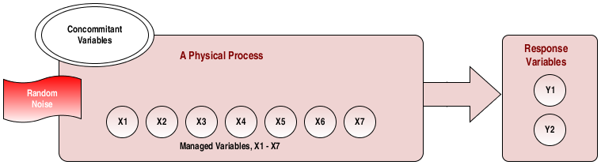

name: inverse layout: true class: center, middle, inverse --- # STAT 105: Lecture 7 ## Chapter 4: Describing Relationships Between Variables .footnote[Course page: [imouzon.github.io/stat105](https://imouzon.github.io/stat105)] --- # Recap ## Quantiles and Their Plots --- layout:false .left-column[ ## Recap ### `\(Q(p)\)` ] .right-column[ ### The Quantile Function For \\(0 \le p \le 1\\) and sample size \\(n\\) we let \\(i = \lfloor n \cdot p + 0.5 \rfloor \\) and find the \\(p^{th}\\) quantile using: <!-- <span style = "font-size: 70%"> </span> --> \\[ Q(p) = x\_i + (n \cdot p + 0.5 - i) (x\_{i + 1} - x\_i) \\] ### Recall - if `\(n \cdot p + .5\)` is an integer, we are going to use an `\(x_i\)` from our sample. - if `\(n \cdot p + .5\)` is **not** an integer, we add a little bit ] --- .left-column[ ## Recap ### `\(Q(p)\)` ] .right-column[ ### The Quantile Function For \\(0 \le p \le 1\\) and sample size \\(n\\) we let \\(i = \lfloor n \cdot p + 0.5 \rfloor \\) and find the \\(p^{th}\\) quantile using: <!-- <span style = "font-size: 70%"> </span> --> \\[ Q(p) = x\_i + (n \cdot p + 0.5 - i) (x\_{i + 1} - x\_i) \\] ### QQ Plots A plot that compares the result of calculating \\( Q(p) \\) using one set of values to the results of calculating \\( Q(p) \\) on a second set of data. We can compare the set of values we are interested in to either 1. another set of values 2. the quantiles we would get for a specific set of _theoretcial_ quantiles. ] --- layout:false .left-column[ ## Recap from Lecture 6 ### `\(Q(p)\)` ] .right-column[ **Example** Using the quantile function , find the .10, .17, .25, .30, .50, .70, and .90 quantiles for the sample: <center> 8, 19, 34, 57, 109 </center> **Solution** | \\(p\\) | .10 | .17 | .25 | .30 | .50 | .70 | .90 | |----------|-----|-----|-----|-----|-----|-----|-----| | \\(n \\cdot p + 0.5\\) | | | | | | | | | \\(i\\) | | | | | | | | | \\(Q(p)\\) | | | | | | | | 1. Start with a simple table ] --- layout:false .left-column[ ## Recap ### `\(Q(p)\)` ] .right-column[ **Example** Using the quantile function , find the .10, .17, .25, .30, .50, .70, and .90 quantiles for the sample: <center> 8, 19, 34, 57, 109 </center> **Solution** | \\(p\\) | .10 | .17 | .25 | .30 | .50 | .70 | .90 | |----------|-----|-----|-----|-----|-----|-----|-----| | \\(n \\cdot p + 0.5\\) | 1 | 1.35 | 1.75 | 2 | 3 | 4 | 5 | | \\(i\\) | 1 | 1 | 1 | 2 | 3 | 4 | 5 | | \\(Q(p)\\) | | | | | | | | 1. Start with a simple table 2. Find all the values of `\(n \cdot p + 0.5\)` and `\(i = \lfloor n \cdot p + 0.5 \rfloor\)` ] --- layout:false .left-column[ ## Recap ### `\(Q(p)\)` ] .right-column[ **Example** Using the quantile function , find the .10, .17, .25, .30, .50, .70, and .90 quantiles for the sample: <center> 8, 19, 34, 57, 109 </center> **Solution** | \\(p\\) | .10 | .17 | .25 | .30 | .50 | .70 | .90 | |----------|-----|-----|-----|-----|-----|-----|-----| | \\(n \\cdot p + 0.5\\) | 1 | 1.35 | 1.75 | 2 | 3 | 4 | 5 | | \\(i\\) | 1 | 1 | 1 | 2 | 3 | 4 | 5 | | \\(Q(p)\\) | 8 | | | 19 | 34 | 57 | 109 | 1. Start with a simple table 2. Find all the values of `\(n \cdot p + 0.5\)` and `\(i = \lfloor n \cdot p + 0.5 \rfloor\)` 3. If `\(n \cdot p + 0.5 = i\)` then `\(Q(p) = x_i\)` (we add nothing) ] --- layout:false .left-column[ ## Recap ### `\(Q(p)\)` ] .right-column[ **Example** Using the quantile function , find the .10, .17, .25, .30, .50, .70, and .90 quantiles for the sample: <center> 8, 19, 34, 57, 109 </center> **Solution** | \\(p\\) | .10 | .17 | .25 | .30 | .50 | .70 | .90 | |----------|-----|-----|-----|-----|-----|-----|-----| | \\(n \\cdot p + 0.5\\) | 1 | 1.35 | 1.75 | 2 | 3 | 4 | 5 | | \\(i\\) | 1 | 1 | 1 | 2 | 3 | 4 | 5 | | \\(Q(p)\\) | 8 | 11.85 | | 19 | 34 | 57 | 109 | 1. Start with a simple table 2. Find all the values of `\(n \cdot p + 0.5\)` and `\(i = \lfloor n \cdot p + 0.5 \rfloor\)` 3. If `\(n \cdot p + 0.5 = i\)` then `\(Q(p) = x_i\)` 4. Calculate the other values: <span style = "font-size: 80%"> `\[ \begin{align} Q(.17) &= x_i + (n \cdot p + 0.5 - 1)(x_{i+1} - x_i) \\\\ &= x_1 + (5 \cdot .17 + 0.5 - 1)(x_{2} - x_1) \\\\ &= 8 + (0.85 + 0.5 - 1)(19 - 8) \\\\ &= 8 + (0.35)(11) \\\\ &= 11.85 \end{align} \]` </span> ] --- layout:false .left-column[ ## Recap ### `\(Q(p)\)` ] .right-column[ **Example** Using the quantile function , find the .10, .17, .25, .30, .50, .70, and .90 quantiles for the sample: <center> 8, 19, 34, 57, 109 </center> **Solution** | \\(p\\) | .10 | .17 | .25 | .30 | .50 | .70 | .90 | |----------|-----|-----|-----|-----|-----|-----|-----| | \\(n \\cdot p + 0.5\\) | 1 | 1.35 | 1.75 | 2 | 3 | 4 | 5 | | \\(i\\) | 1 | 1 | 1 | 2 | 3 | 4 | 5 | | \\(Q(p)\\) | 8 | 11.85 | 16.25 | 19 | 34 | 57 | 109 | 1. Start with a simple table 2. Find all the values of `\(n \cdot p + 0.5\)` and `\(i = \lfloor n \cdot p + 0.5 \rfloor\)` 3. If `\(n \cdot p + 0.5 = i\)` then `\(Q(p) = x_i\)` 4. Calculate the other values: <span style = "font-size: 80%"> `\[ \begin{align} Q(.25) &= x_i + (n \cdot p + 0.5 - 1)(x_{i+1} - x_i) \\\\ &= x_1 + (5 \cdot .25 + 0.5 - 1)(x_{2} - x_1) \\\\ &= 8 + (1.25 + 0.5 - 1)(19 - 8) \\\\ &= 8 + (0.75)(11) \\\\ &= 16.25 \end{align} \]` </span> ] --- .left-column[ ## Recap ### `\(Q(p)\)` ### Plots ] .right-column[ ### Boxplots Use `\(Q(.25), Q(.5), Q(.75)\)` along with IQR to show spread of the data over quartiles and identify "outlying" values. ### Quantile Plots: Scatterplots using quatiles and their corresponding values. ### Quantile-Quantile Plots - For samples of equal size `\(n\)` we can create a plot that helps us identify if the spread of the data is similar - We can also compare the quantiles from our sample to the quantiles of some known distribution ] --- .left-column[ ## Recap ### `\(Q(p)\)` ### Plots ] .right-column[ ### Quantile-Quantile Plots **Example** Compare the following three samples using Quantile-Quantile plots: - Sample 1: 46, 40, 39, 37, 45, 38, 43 - Sample 2: 141, 123, 120, 112, 136, 115, 133 - Sample 3: 99, 76, 92, 82, 94, 80, 90 **Approach** We create a table of the quantiles that correspond to data points. ] --- .left-column[ ## Recap ### `\(Q(p)\)` ### Plots ] .right-column[ ### Quantile-Quantile Plots **Example** Compare the following three samples using Quantile-Quantile plots: - Sample 1: 82, 92, 51, 88, 63, 92, 85 - Sample 2: 41, 48, 31, 37, 39, 38, 42 - Sample 3: 125, 146, 95, 114, 118, 116, 128 **Step 0**: Determine which quantiles correspond to the values in our set: - There are \\(n = 7\\) observations in our data. - Find \\(\\frac{i - 0.5}{7}\\) for \\(i = 1, 2, \ldots, 7\\) | \\(i\\) | 1 | 2 | 3 | 4 | 5 | 6 | 7 | |--|--|--|--|--|--|--|--| | \\(p\\) | 0.07 | 0.21 | 0.36 | 0.5 | 0.64 | 0.79 | 0.93 | ] --- .left-column[ ## Recap ### `\(Q(p)\)` ### Plots ] .right-column[ ### Quantile-Quantile Plots **Example** Compare the following three samples using Quantile-Quantile plots: - Sample 1: 82, 92, 51, 88, 63, 92, 85 - Sample 2: 41, 48, 31, 37, 39, 38, 42 - Sample 3: 125, 146, 95, 114, 118, 116, 128 **Step 1**: Create a table of the quantiles that correspond to data points: | | \\(p\\) | 0.07 | 0.21 | 0.36 | 0.5 | 0.64 | 0.79 | 0.93 | |--|--|--|--|--|--|--|--|--| | Sample 1 | \\(Q(p)\\) | 51 | 63 | 82 | 85 | 88 | 92 | 92 | | Sample 2 | \\(Q(p)\\) | 31 | 37 | 38 | 39 | 41 | 42 | 48 | | Sample 3 | \\(Q(p)\\) | 95 | 114 | 116 | 118 | 125 | 128 | 146 | ] --- .left-column[ ## Recap ### `\(Q(p)\)` ### Plots ] .right-column[ ### Quantile-Quantile Plots **Example** Compare the following three samples using Quantile-Quantile plots: - Sample 1: 82, 92, 51, 88, 63, 92, 85 - Sample 2: 41, 48, 31, 37, 39, 38, 42 - Sample 3: 125, 146, 95, 114, 118, 116, 128 **Step 2**: Use the paired quantiles to make the plots    ] --- name: inverse layout: true class: center, middle, inverse --- # Chapter 4, Section 1 ## Linear Relationships Between Variables --- layout: false .left-column[ ## Describing Relationships ### Idea ] .right-column[ ## Describing Relationships We have a standard idea of how our experiment works: <center>  </center> *and* we know that with an valid experiment, we can say that the changes in our experimental variables actually *cause* changes in our response. But how do we describe those response when we know that random error would make each result different... ] --- .left-column[ ## Describing Relationships ### Idea ] .right-column[ ## Describing Relationships <center> </center> We start with a valid mathematical model, for instance a line: \\[ y = \beta_0 + \beta_1 \cdot x \\] In this case, - \\(\beta_0\\) is the intercept - when \\(x = 0\\), \\(y = \beta_0\\). - \\(\beta_1\\) is the slope - when \\(x\\) increase by one unit, \\(y\\) increases by\\(\beta_1\\) units. In this case, \\(\beta_0\\) is the intercept - when \\(x = 0\\), \\(y = \\beta_0\\). ] --- layout: false # Topics covered in class (overhead): - Identifying possible linear relationships - Notation: - linear equation: `\(y \approx \beta_0 + \beta_1 x \)` - fitted equation: `\(\hat{y} = b_0 + b_1 x \)` - Fitting lines using the principle of least squares - Sample correlation `\(r\)` - Coeffecient of determination `\(R^2\)` - Residuals: `\(e_i = y_i = \hat{y_i}\)` - **Example**: Chapter 4, Section 1, Exercise 3